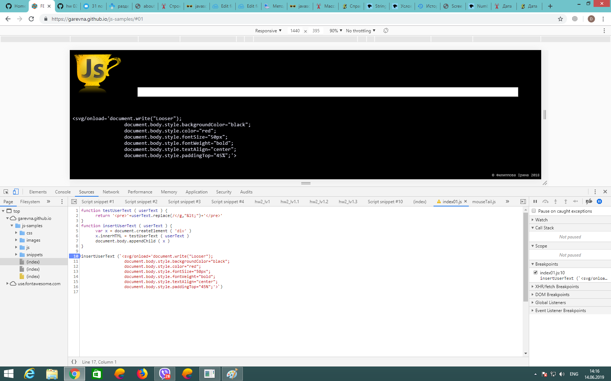

Создайте пустой массив letters. Создайте строку из нескольких слов, например "Backend As A Service".Напилите код, который разбивает эту строку на массив слов и пушит в массив letters первый символ каждого слова. Выведите результат в консоль. Объедините все элементы массива letters в одну строку и выведите ее в консоль.
var letters = [];
var string = "Backend As A Service";
var arr = string.split(" ")
for (i = 0; i < arr.length; i++) {
letters.push(arr[i].substr(0, 1))
}
console.log(letters);
console.log(letters.join(""));
Объявите функцию с одним формальным параметром, которая проверяет тип данных переданного аргумента и: если это число, возвращает текущую дату в формате "20.02.2019, 13:21:51" в противном случае возвращает строку "Неверный тип данных". Вызовите функцию
function formDate() {
var d = new Date();
var date = d.getDate();
var month = d.getMonth() + 1;
var year = d.getFullYear();
var hours = d.getHours();
var minutes = d.getMinutes();
var seconds = d.getSeconds();
return year + "." + month + "." + date + ", " + hours + ":" + minutes + ":" + seconds;
}
function date(x) {
var a = Number.isNaN(x) ? "Неверный тип данных" : formDate(); // построение даты происходит только при вводе числа
return a
}
date("23")
Откройте Chrome DevTools. В панели навигации найдите файл index01.js ( в папке js/ ). Установите breakpoint на строке вызова функции insertUserText ( строка 10 ). Перезагрузите страницу. Теперь обратите внимание на функцию testUserText. Ваша задача: обезопасить свою страницу от внедрения вредоносного кода с помощью функции валидации testUserText функция должна вывести на страницу текст пользователя безопасным способом ( т.е. текст должен быть выведен "as is" ( как есть ), но код не должен быть выполнен ).
